Você concilia trabalho, rotina e estudo.
CONCURSO SME APARECIDA DE GOIÂNIA · PE-I PEDAGOGIA
Prepare-se para disputar uma das 1.056 vagas de Professor Pedagogo com salário de R$ 4.508,28.
Estude LDB, ECA, BNCC, PPP, avaliação, inclusão e legislação municipal por meio de quadrinhos que transformam os pontos difíceis do edital em cenas, comparações e pegadinhas fáceis de entender, memorizar e revisar.
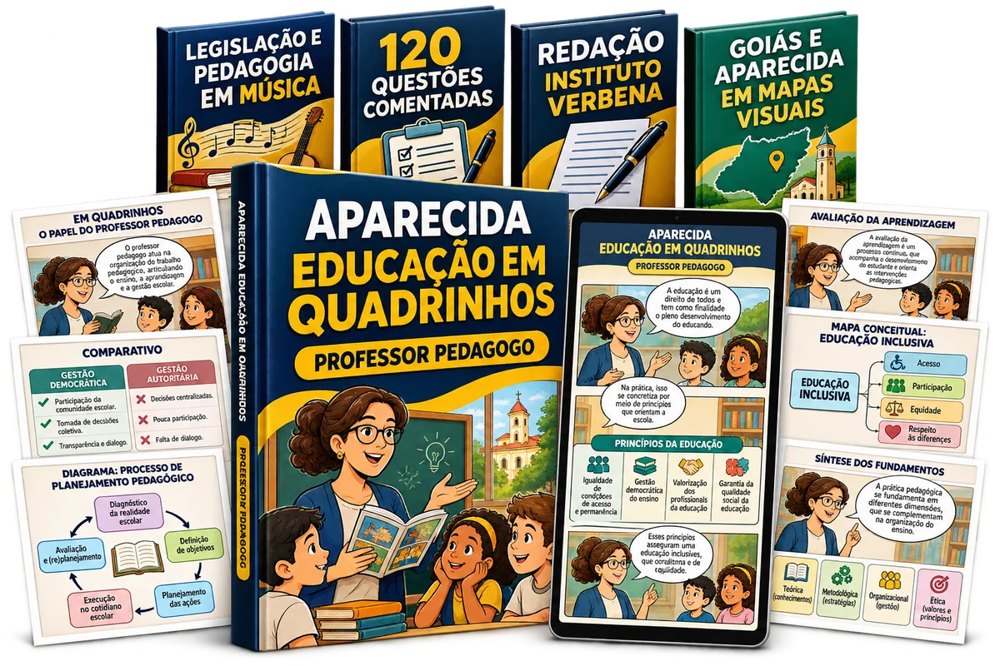
- ✓ Siga uma rota visual pronta e saiba exatamente o que estudar até a prova
- ✓ Entenda leis e conceitos difíceis por cenas do cotidiano escolar
- ✓ Reconheça palavras-chave e pegadinhas que podem mudar a alternativa correta
Acesso digital · Pagamento único · Garantia de 7 dias
ESTUDAR PARA CONCURSO NÃO PRECISA SER UMA MARATONA DE TEXTO
Quando tudo parece importante, fica difícil saber o que entender, memorizar e revisar.
Leis extensas, conceitos parecidos e apostilas acumuladas consomem tempo. O problema não é falta de esforço: é tentar guardar conteúdo demais sem uma imagem clara do que cada assunto significa na prática.
Os assuntos se misturam e parecem não terminar.
Você lê hoje e precisa começar tudo outra vez amanhã.
Uma palavra muda o sentido e derruba a alternativa.
Por isso, o conteúdo foi transformado em uma sequência visual: você vê a cena, entende a regra, identifica a pegadinha e termina com uma síntese pronta para revisar.
ENTENDA E REVISE SEM TEXTOS INTERMINÁVEIS
Veja como assuntos difíceis viram cenas que ajudam você a entender, memorizar e acertar mais questões.
Comece pela rota de estudos e deslize pelas páginas para visualizar como cada tema é explicado, comparado e resumido para a sua revisão.
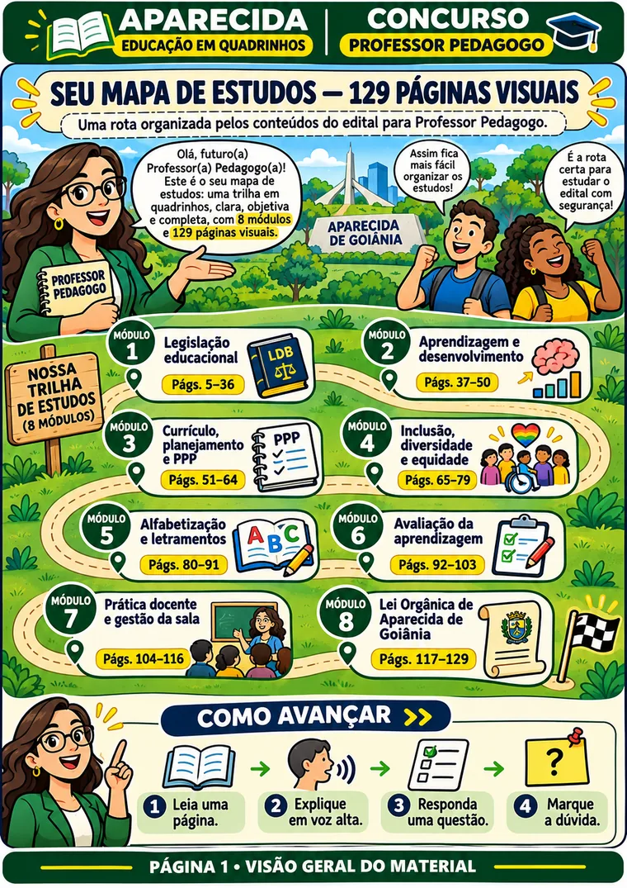
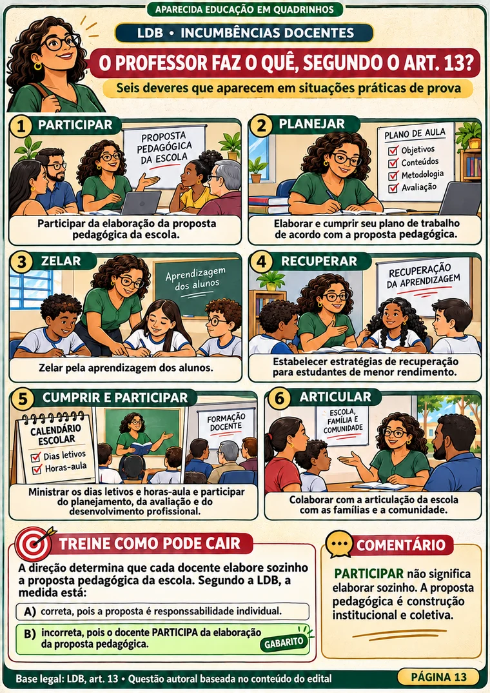
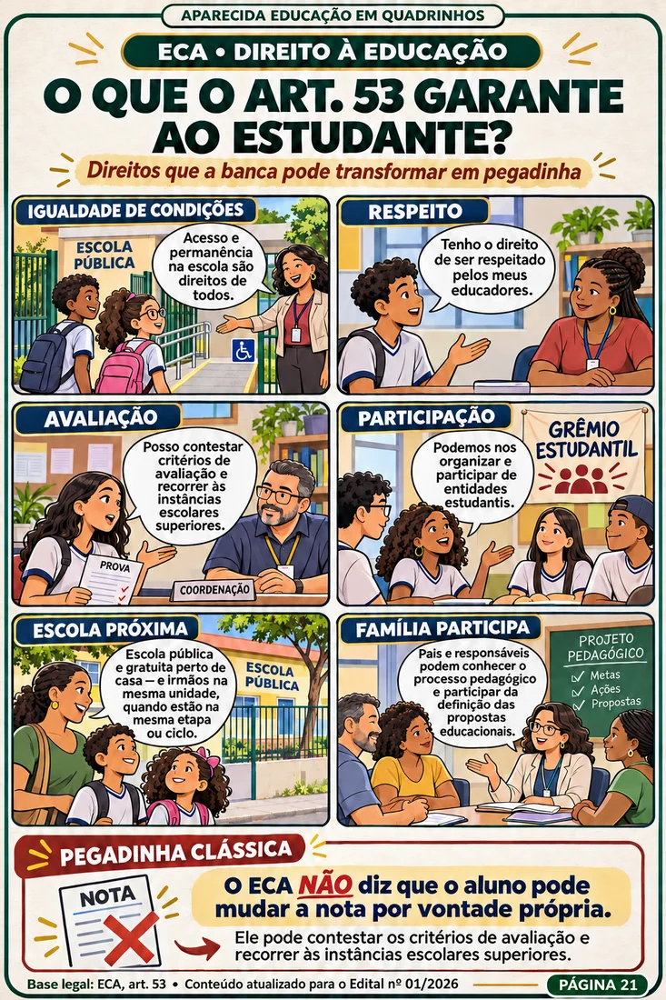
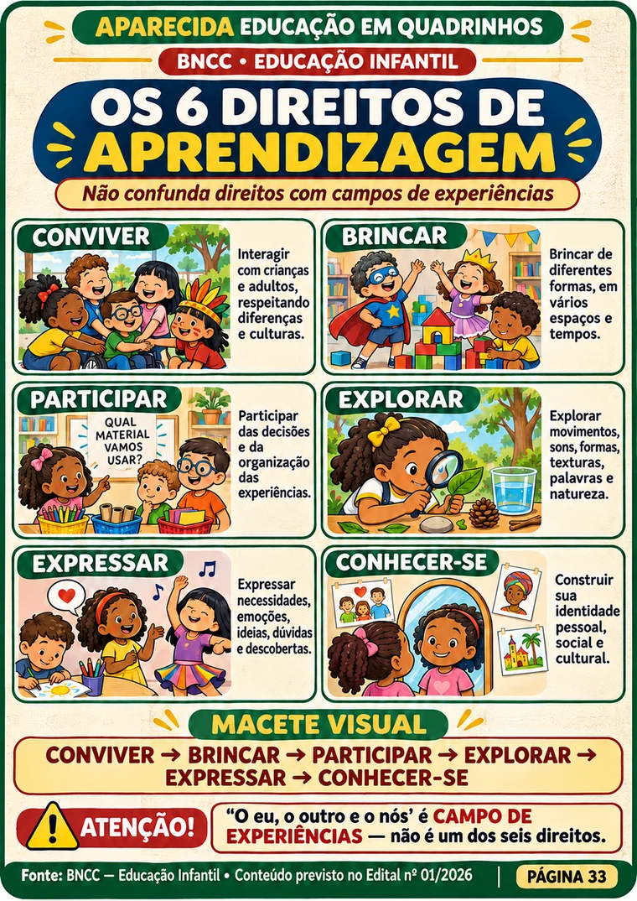
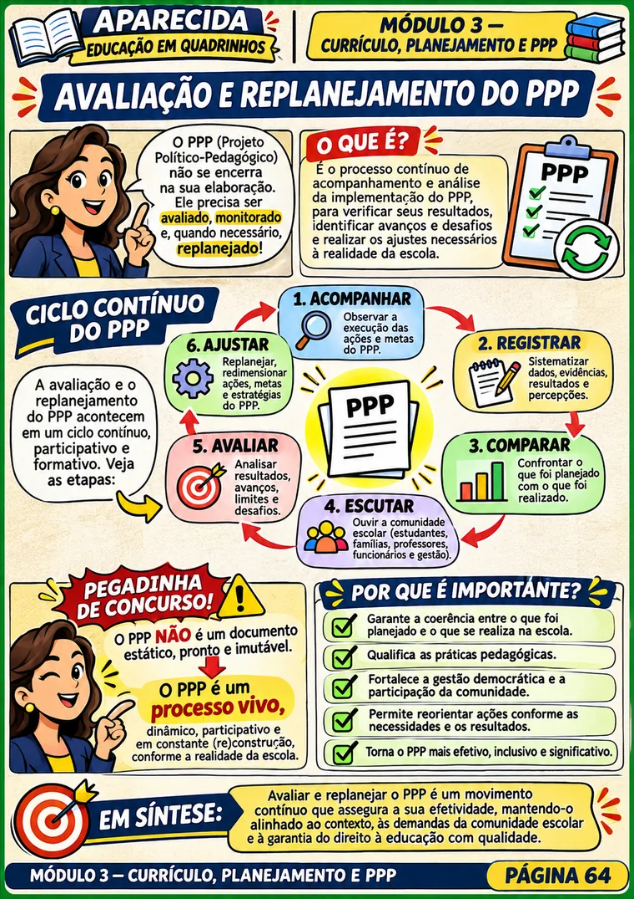
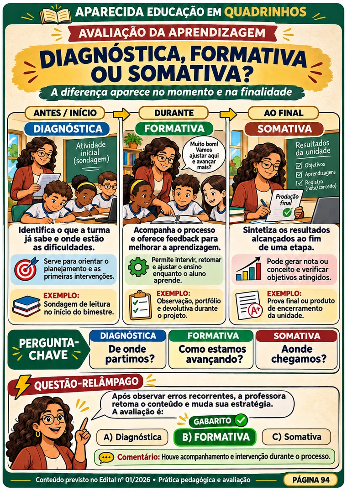
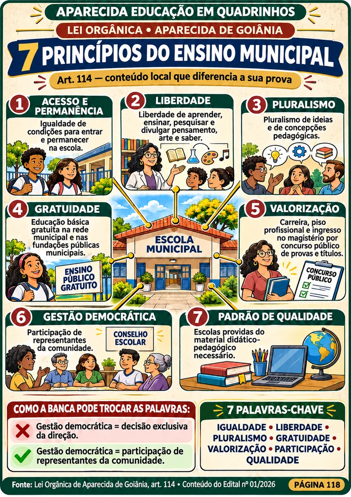
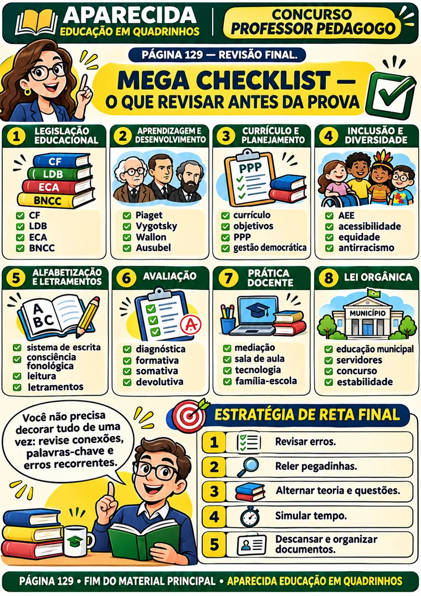
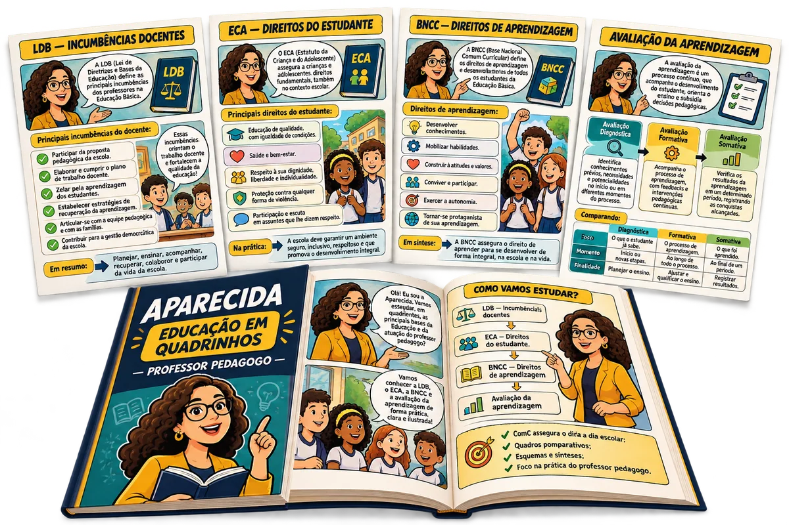
UM CAMINHO VISUAL PARA CADA ASSUNTO
Você não recebe apenas informação. Recebe uma forma clara de raciocinar até a resposta.
Cada página aproxima o texto legal da realidade escolar e destaca exatamente o que merece atenção na hora de resolver a questão.
- Cena: enxergue o conceito em uma situação concreta
- Regra: entenda o ponto central sem rodeios
- Palavras-chave: reconheça o que muda a alternativa
- Pegadinha: evite as confusões mais comuns
- Síntese: revise o assunto em poucos minutos
DO PRIMEIRO TEMA À REVISÃO FINAL
Os oito módulos que organizam os conhecimentos específicos.
Você sabe onde começar, qual assunto vem depois e onde voltar quando precisar reforçar um ponto do edital.
LEGISLAÇÃO EDUCACIONAL
LDB, ECA, Constituição, PNE e BNCC
Princípios, direitos, deveres, organização da educação e bases curriculares.
APRENDIZAGEM
Desenvolvimento e teorias pedagógicas
Concepções de ensino, aprendizagem e situações práticas de mediação.
CURRÍCULO E PPP
Planejamento, currículo e projeto pedagógico
Construção, acompanhamento, participação e articulação do trabalho escolar.
INCLUSÃO E DIVERSIDADE
Equidade, acessibilidade e diferenças
Educação inclusiva, relações étnico-raciais, adaptações e participação.
ALFABETIZAÇÃO
Alfabetização e letramentos
Conceitos, práticas, intervenções e diferenças recorrentes em prova.
AVALIAÇÃO
Acompanhamento da aprendizagem
Avaliação diagnóstica, formativa, somativa, devolutivas e intervenção.
PRÁTICA DOCENTE
Gestão da sala e desenvolvimento profissional
Mediação, conflitos, recursos didáticos, tecnologias e reflexão da prática.
LEGISLAÇÃO MUNICIPAL
Lei Orgânica de Aparecida de Goiânia
Educação e servidores públicos nos trechos indicados pelo edital.
ESTE MATERIAL FOI PENSADO PARA QUEM PRECISA AVANÇAR
Ele faz sentido para você que...
Trabalha e estuda quando sobra tempo
Precisa abrir o assunto e começar sem preparar resumos do zero.
Já se perdeu em PDFs extensos
Quer encontrar a ideia central, a aplicação e a pegadinha na mesma página.
Lê, mas sente que esquece rápido
Precisa de cenas e sínteses que ajudem a recuperar o raciocínio.
Quer revisar com mais direção
Prefere seguir uma sequência organizada em vez de escolher assuntos ao acaso.
VOCÊ LEVA OS QUADRINHOS E AINDA RECEBE QUATRO REFORÇOS DE ESTUDO
Um combo completo para ouvir, praticar, escrever e revisar.
Depois de entender o conteúdo pelos quadrinhos, use cada bônus para transformar o estudo em uma rotina mais completa.
BÔNUS 1 · DESTAQUE
R$ 47GRÁTIS HOJE
Playlist da Aprovação — Legislação e Pedagogia em Música
Continue revisando enquanto vai ao trabalho, caminha, treina ou organiza a rotina. As faixas ajudam você a reencontrar palavras-chave dos assuntos estudados nos quadrinhos.
Princípios da EducaçãoPrévia da Playlist da Aprovação
0:001:08
- Faixas separadas por tema
- Letras para acompanhar a revisão
- Reprodução pelo celular ou computador
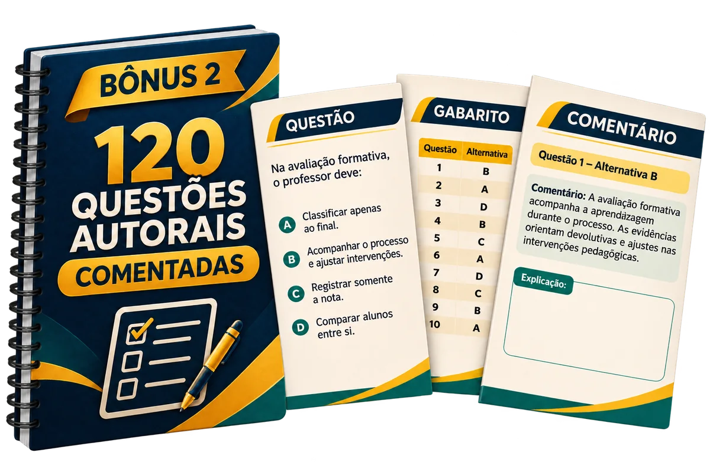
BÔNUS 2R$ 37GRÁTIS HOJE
Caderno de 120 Questões Autorais Comentadas
Saia da leitura e teste o que realmente entendeu. Resolva questões por assunto, confira o gabarito e use os comentários para corrigir o raciocínio.
- Questões com quatro alternativas
- Organização pelos módulos do material
- Comentários para orientar a próxima revisão
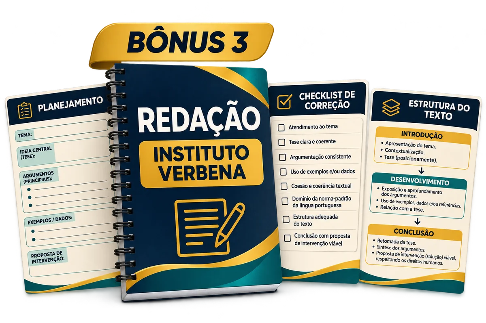
BÔNUS 3R$ 47GRÁTIS HOJE
Guia de Redação Instituto Verbena
Transforme ideias em uma resposta organizada. Planeje tese, argumentos e conclusão com folhas práticas e temas ligados à educação e à realidade social.
- Estrutura visual do texto
- Planejamento antes da escrita
- Checklist para revisar sua redação
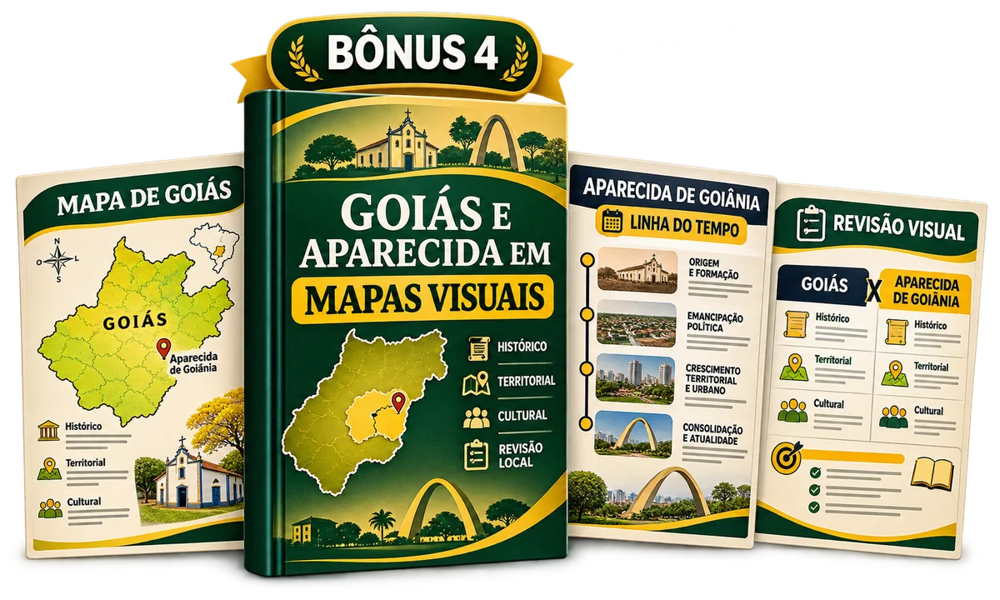
BÔNUS 4R$ 37GRÁTIS HOJE
Goiás e Aparecida em Mapas Visuais
Organize os conhecimentos locais sem depender de páginas e páginas de texto. Use mapas, linhas do tempo e comparações para revisar história, território, cultura e sociedade.
- Conteúdo geral indicado no edital
- Goiás e Aparecida de Goiânia
- Revisão visual para a reta final
E PARA VOCÊ NÃO FICAR PENSANDO “O QUE EU ESTUDO HOJE?”
Use as ferramentas que transformam conteúdo em rotina.
Além dos quadrinhos e dos quatro bônus, você recebe folhas imprimíveis para distribuir os assuntos, registrar dificuldades e acompanhar o que já foi revisado.
- Plano de estudo adaptável
- Planner semanal
- Caderno de erros
- Checklist final dos oito módulos
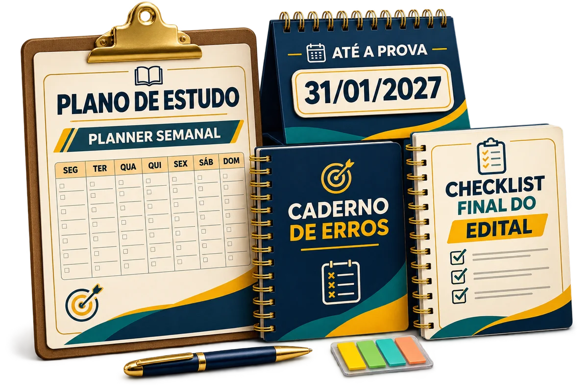
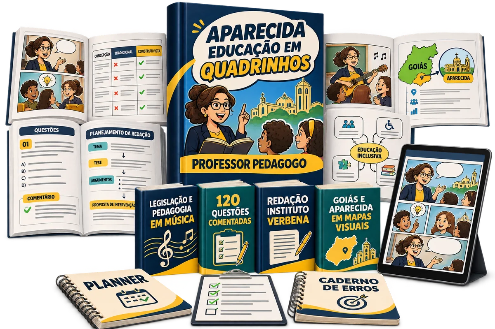
TUDO O QUE SERÁ LIBERADO EM UM ÚNICO ACESSO
Você entra pelos quadrinhos e sai com uma preparação completa.
- ✓Aparecida Educação em Quadrinhos
129 páginas ilustradas distribuídas em oito módulos.
- ✓Playlist da Aprovação
Legislação e pedagogia em faixas para ouvir e revisar.
- ✓120 Questões Autorais Comentadas
Prática por assunto com gabarito e comentários.
- ✓Guia de Redação Instituto Verbena
Planejamento, estrutura, checklist e temas de treino.
- ✓Goiás e Aparecida em Mapas Visuais
Mapas, linhas do tempo e conhecimentos locais.
- ✓Kit de organização
Plano de estudo, planner, caderno de erros e checklist final.
ACESSO COMPLETO
Comece agora sua preparação visual para Professor Pedagogo.
O material principal, os quatro bônus e todas as ferramentas de organização ficam disponíveis em um único acesso digital.
- ✓ Rota visual completa para saber exatamente o que estudar
- ✓ Leis e conceitos transformados em quadrinhos fáceis de revisar
- ✓ Questões comentadas para testar e corrigir seu raciocínio
- ✓ Playlist da Aprovação para revisar durante a rotina
- ✓ Arquivos para baixar, imprimir e estudar no seu ritmo
- ✓ Acesso vitalício, sem assinatura ou mensalidade
De R$ 265 por:R$ 67
QUERO ACESSAR O MATERIAL →
à vista, ou em até 12x de R$ 6,93
🔒 Pagamento seguro⚡ Acesso digital♾️ Acesso vitalício
7DIAS
GARANTIA INCONDICIONAL
Conheça todo o material sem assumir o risco.
Você tem sete dias para abrir os arquivos, conhecer os módulos e conferir tudo com calma. Se decidir que o material não é para você, basta enviar um e-mail solicitando o reembolso dentro do prazo. Assim que a solicitação chegar, devolvemos 100% do valor em menos de um minuto.
COMO FUNCIONA DEPOIS DO PAGAMENTO
Em três passos, o material já fica pronto para o seu estudo.
Garanta o acesso
Faça o pagamento único pela página segura.
Receba no e-mail
Após a aprovação do pagamento, o acesso chega em menos de um minuto no e-mail informado na compra.
Abra e comece
Escolha o primeiro módulo no celular, computador ou nas páginas impressas.
PERGUNTAS FREQUENTES
Tire suas dúvidas antes de acessar.
Para qual cargo este material foi organizado?+
O conteúdo foi estruturado para o cargo PE-I — Pedagogia do concurso da Secretaria Municipal de Educação de Aparecida de Goiânia.
O material acompanha os conhecimentos específicos do cargo?+
Sim. Os oito módulos reúnem legislação educacional, aprendizagem, currículo, PPP, inclusão, alfabetização, avaliação, prática docente e legislação municipal, conforme a organização apresentada nesta página.
Como os quadrinhos ajudam no estudo?+
As cenas transformam conceitos e regras em situações escolares que você consegue visualizar. Cada página também destaca palavras-chave, diferenças importantes, pegadinhas e uma síntese para facilitar a revisão.
Como vou receber o acesso?+
Após a aprovação do pagamento, você recebe o link de acesso em menos de um minuto no e-mail informado na página de pagamento. Caso não apareça na caixa de entrada, confira as pastas de spam e promoções.
O material é físico ou digital?+
É digital. Você pode abrir os arquivos no celular, tablet ou computador, fazer o download e imprimir as páginas que desejar para seu estudo pessoal.
Preciso pagar mensalidade?+
Não. Você faz um único pagamento e recebe acesso vitalício ao material, sem assinatura, mensalidade ou cobranças futuras.
Já estudo por cursinho. O material ainda serve para mim?+
Sim. Você pode usar o cursinho para aprofundar a teoria e os quadrinhos para visualizar, organizar e revisar os assuntos com mais rapidez.
Como funciona a garantia de 7 dias?+
Você pode conhecer todo o material durante sete dias. Se não quiser continuar, basta enviar um e-mail dentro do prazo solicitando o reembolso. Assim que a solicitação chegar, devolvemos 100% do valor em menos de um minuto.
129 PÁGINAS · 8 MÓDULOS · 4 BÔNUS
Abra o primeiro quadrinho e comece hoje a transformar conteúdo em revisão.
Pagamento único, acesso digital e sete dias de garantia.
QUERO ACESSAR AGORA →